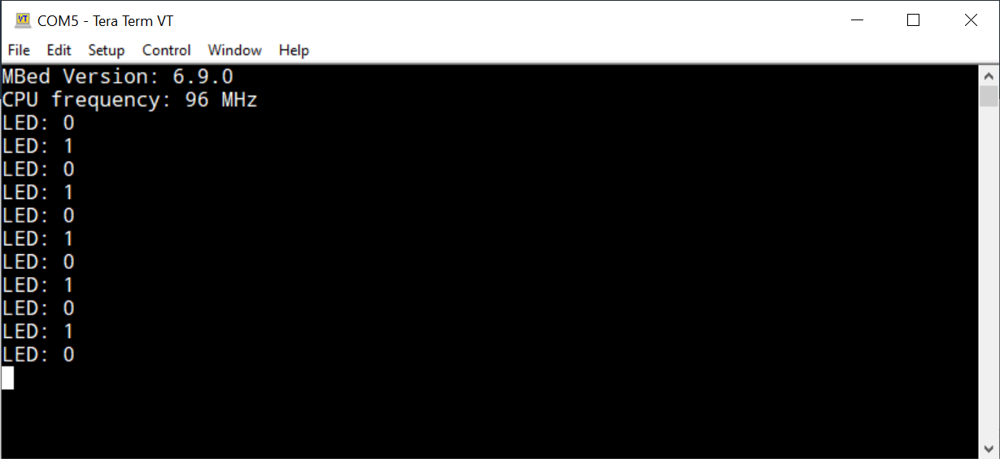

การเขียนโปรแกรม Mbed OS ด้วย Visual Studio Code + PIO สำหรับบอร์ด Black Pill (STM32F4)#
Keywords: Mbed OS, STM32 Programming, STM32F4, Black Pill Boards, PlatformIO, VS Code
▷ บอร์ด Black Pill และ Mbed Custom Target#
แม้ว่าเราสามารถเขียนโค้ดสำหรับบอร์ดไมโครคอนโทรลเลอร์ WeAct Studio MiniF4 / Black Pill STM32F4x1
(เช่น F401CCU6, F401CEU6 และ F411CCE6)
ได้โดยใช้ ST-STM32 Framework (ststm32) ของ PlatformIO Core
(เช่น v5.2.4 และ v6.1.6) ซึ่งมีตัวเลือก Framework อย่างเช่น Arduino (STM32Duino), CMSIS, STM32Cube HAL เป็นต้น
แต่ก็ยังไม่รองรับการใช้งาน Mbed OS สำหรับบอร์ดดังกล่าว
ขั้นตอนการติดตั้งและใช้งาน VS Code (ทดลองใช้กับระบบปฏิบัติการ Windows 10) ร่วมกับ PlatformIO เช่น เพื่อเขียนโปรแกรมด้วย Arduino สามารถศึกษาได้จากบทความภาษาไทย "Arduino Programming with STM32 and PlatformIO"
บทความนี้สาธิตขั้นตอนสำหรับการติดตั้งไฟล์และตั้งค่าใช้งาน Mbed OS สำหรับบอร์ด STM32F411CEU6
- ดาวน์โหลดและแตกไฟล์ stm32f411ceu6_blackpill_mbed_demo.zip
ซึ่งเป็นโปรเจกต์สาธิตการเขียนโปรแกรมด้วย Mbed OS
- ในโปรเจกต์ตัวอย่างนี้ได้มีการสร้าง Custom Targets ที่มีชื่อว่า
BLACKPILL_F411CEไว้ให้แล้ว ซึ่งได้แก้ไขดัดแปลงจากvznncv/TARGET_BLACKPILL_F411CE
- ในโปรเจกต์ตัวอย่างนี้ได้มีการสร้าง Custom Targets ที่มีชื่อว่า
- เปิดใช้งาน VS Code ที่ได้มีการติดตั้ง PIO Extension พร้อมใช้งานแล้ว จากนั้นให้คลิกเลือก PlatformIO > PIO Home > Open
- เปิดโปรเจกต์ที่ได้ดาวน์โหลดมา โดยเลือกจาก PIO Home > Open Project ใน Quick Access
เลือกไดเรกทอรีของโปรเจกต์ตัวอย่างที่มีไฟล์
platformio.iniอยู่ภายใน - ตรวจสอบการตั้งค่าในไฟล์ของโปรเจกต์ ได้แก่
custom_targets.jsonเกี่ยวข้องกับการตั้งค่าใช้งาน Custom Target ของ Mbedmbed_app.jsonเกี่ยวข้องกับการตั้งค่าใช้งานสำหรับ Mbed Applicationplatformio.jsonเกี่ยวข้องกับการตั้งค่าใช้งานสำหรับ PlatformIO
- แก้ไขโค้ดในไฟล์
main.cppตามโค้ดตัวอย่าง แล้วทำขั้นตอน PIO Build ซึ่งจะได้ไฟล์เอาต์พุตfirmware.elfภายใต้ไดเรกทอรี./.pio/build/blackpill_f411ce/ - ทำขั้นตอน PIO Upload เพื่อทดสอบการทำงานของโค้ดตัวอย่างโดยใช้อุปกรณ์ฮาร์ดแวร์จริง (บอร์ด Black Pill จะต้องใช้งานร่วมกับ ST-Link/V2 USB Dongle สำหรับการอัปโหลดไฟล์ไปยังบอร์ด)
โค้ดตัวอย่าง: main.cpp
#include "mbed.h"
#include "USBSerial.h"
DigitalOut led(LED1); // PC_13
USBSerial serialUSB; // usb USB-CDC (blocking mode)
int main() {
// show Mbed OS version
serialUSB.printf( "Mbed Version: %d.%d.%d\r\n",
MBED_MAJOR_VERSION,
MBED_MINOR_VERSION,
MBED_PATCH_VERSION );
serialUSB.printf( "CPU frequency: %lu MHz\r\n",
SystemCoreClock/1000000L );
while (true) {
// show the current LED status
serialUSB.printf( "LED: %d\r\n", led.read() );
// toggle onboard LED
led = !led;
// delay for 500 milliseconds
ThisThread::sleep_for( 500ms );
}
}
รูป: การเปิดโปรเจกต์ตัวอย่างใน PIO Home
รูป: การทำขั้นตอน PIO Build เพื่อคอมไพล์โค้ดในโปรเจกต์
เมื่อได้ทำขั้นตอน Build โดยปราศจากข้อผิดพลาดแล้ว
ให้เชื่อมต่อสาย USB Type-C ระหว่างคอมพิวเตอร์ของผู้ใช้กับบอร์ด Black Pill
และทำขั้นตอน Upload เพื่ออัปโหลดไฟล์ .bin ของโปรเจกต์ ไปยังบอร์ดไมโครคอนโทรลเลอร์
จากนั้นให้ใช้โปรแกรม เช่น Serial Monitor ของ Arduino IDE เปิด COM Port ที่ตรงกับการทำงานของบอร์ด Black Pill เพื่อรับข้อความจากบอร์ดผ่านทาง USB และจะเห็นว่า LED บนบอร์ดเริ่มกระพริบ
หากไม่เปิดพอร์ตใช้งาน การทำงานของโค้ดตัวอย่างในไมโครคอนโทรลเลอร์จะหยุดรอเมื่อเริ่มต้นทำงาน แต่หากไม่ต้องการให้หยุดรอ ให้เปลี่ยนมาใช้โค้ดตัวอย่างดังนี้ (ให้ USB Device ทำงานในโหมด non-blocking)
#include "mbed.h"
#include "USBSerial.h"
DigitalOut led(LED1); // PC_13
USBSerial serialUSB(false); // usb USB-CDC (non-blocking mode)
int main() {
serialUSB.init();
serialUSB.connect();
while ( !serialUSB.connected() ) {
// blink the onboard LED while waiting for USB connection
led = !led;
ThisThread::sleep_for( 100ms );
}
// show Mbed OS version
serialUSB.printf( "MBed Version: %d.%d.%d\r\n",
MBED_MAJOR_VERSION,
MBED_MINOR_VERSION,
MBED_PATCH_VERSION );
serialUSB.printf( "CPU frequency: %lu MHz\r\n",
SystemCoreClock/1000000L );
while (true) {
// show the current LED status
serialUSB.printf( "LED: %d\r\n", led.read() );
// toggle onboard LED at a slow rate
led = !led;
ThisThread::sleep_for( 500ms );
}
}
รูป: การทำขั้นตอน PIO Upload เพื่อแปลงไฟล์
firmware.elf ให้เป็น firmware.bin แล้วอัปโหลดไปยังบอร์ดทดลอง

รูป: ตัวอย่างข้อความที่ได้รับผ่านทาง USB-Serial ซึ่งแสดงให้เห็น เวอร์ชันของ Mbed OS ที่ได้ใช้งาน และความถี่ของซีพียูเมื่อใช้งาน USB-CDC (Virtual Serial Port) สำหรับบอร์ด BlackPill

รูป: การเชื่อมต่อระหว่างบอร์ด Black Pill กับอุปกรณ์ ST-Link/v2 USB Dongle เพื่ออัปโหลดไฟล์ .bin และการเชื่อมต่อด้วยสาย USB Type-C สำหรับสื่อสารข้อมูลด้วย Built-in USB-CDC (Virtual COM port)
รูป: การคอมไพล์โค้ด อัปโหลดไฟล์เฟิร์มแวร์ และรับข้อความเอาต์พุตจากบอร์ด BlackPill โดยใช้ Serial Monitor ของ PlatformIO
▷ การส่งข้อความด้วย UnbufferedSerial#
ถัดไปเป็นตัวอย่างการเปิดใช้งานวงจร USART2 (Hardware Serial) ของ STM32F411CEU6
สำหรับการรับส่งข้อมูลแบบบิตอนุกรม ซึ่งตรงกับขา PA_2 และ PA_3 สำหรับ TX และ RX ตามลำดับ
โดยเลือกใช้คลาส
UnbufferedSerial
ของ Mbed Driver
#include "mbed.h"
DigitalOut led(LED1); // PC_13
#define CONSOLE_TX PA_2
#define CONSOLE_RX PA_3
UnbufferedSerial serial2_port( CONSOLE_TX, CONSOLE_RX, 115200 );
void send_string( const char *str ) {
while ( !serial2_port.writable() ) { }
serial2_port.write( str, strlen(str) );
serial2_port.sync(); // flush serial output
}
int main() {
char sbuf[128];
serial2_port.format(
8, // 8 data bits
mbed::SerialBase::None, // no parity bit
1 // 1 stop bit
);
// send strings to the serial console
sprintf( sbuf, "Mbed Version: %d.%d.%d\r\n",
MBED_MAJOR_VERSION,
MBED_MINOR_VERSION,
MBED_PATCH_VERSION );
send_string( sbuf );
sprintf( sbuf, "CPU frequency: %lu MHz\r\n",
SystemCoreClock/1000000L );
send_string( sbuf );
while (true) {
// send a string to serial2
sprintf( sbuf, "LED: %d\r\n", led.read() );
send_string( sbuf );
// toggle LED
led = !led;
ThisThread::sleep_for( 500ms );
}
}
รูป: บอร์ด Black Pill เชื่อมต่อกับอุปกรณ์ ST-Link/v2 USB Dongle และโมดูล USB-to-Serial (CP2104)
โมดูล USB-to-Serial ได้ถูกนำมาใช้เพื่อสื่อสารข้อมูลกับวงจร USART2 ภายในไมโครคอนโทรลเลอร์
ที่ขา PA_2 และ PA_3 ทางด้านหนึ่ง และอีกด้านหนึ่งคือ พอร์ต USB ที่เครื่องคอมพิวเตอร์ของผู้ใช้
▷ การส่งข้อความด้วย BufferedSerial#
ตัวอย่างนี้เป็นการใช้งานสำหรับการรับส่งข้อมูลแบบบิตอนุกรม
โดยใช้วงจร USART2 โดยใช้คลาส
BufferedSerial
ของ Mbed Driver และยังสามารถนำไปใช้กับคำสั่ง printf() ได้ด้วย ตามตัวอย่างโค้ดต่อไปนี้
#include "mbed.h"
DigitalOut led(LED1); // PC_13
#define CONSOLE_TX PA_2
#define CONSOLE_RX PA_3
BufferedSerial serial2_port( CONSOLE_TX, CONSOLE_RX, 115200 );
// The mbed_override_console() is declared in the file
// mbed-os/platform/mbed_retarget.h.
FileHandle *mbed::mbed_override_console(int fd) {
return &serial2_port;
}
int main() {
char sbuf[128];
serial2_port.set_format(
8, // 8 data bits
BufferedSerial::None, // no parity
1 // 1 stop bit
);
// send strings to the serial console
printf( "Mbed Version: %d.%d.%d\r\n",
MBED_MAJOR_VERSION,
MBED_MINOR_VERSION,
MBED_PATCH_VERSION );
printf( "CPU frequency: %lu MHz\r\n",
SystemCoreClock/1000000L );
while (true) {
// send a string to serial2
sprintf( sbuf, "LED: %d\r\n", led.read() );
serial2_port.write( sbuf, strlen(sbuf) );
led = !led; // toggle LED
ThisThread::sleep_for( 500ms );
}
}
▷ การใช้งานโมดูล CMSIS-DAP#
นอกจากโมดูล ST-Link แล้ว ยังมีตัวเลือกอื่นที่สามารถนำมาใช้ได้เพื่อการอัปโหลดและดีบักโปรแกรมสำหรับชิป STM32 ถัดไปเป็นตัวอย่างการใช้โมดูล WeAct-Studio WCHLink และมีขาเชื่อมต่อ 2 ชุด ดังนี้
- SWD:
+3.3V,DIO,CLK,GND,+5V - Serial:
+3.3V,TXD,RXD,GND,+5V
คอนเนกเตอร์ SWD (CMSIS-DAP) จะใช้แทน ST-Link สำหรับการอัปโหลดโปรแกรมและดีบักได้
และคอนเนกเตอร์จะใช้สำหรับการเชื่อมต่อ Serial Tx/Rx ไปยังขา PA_3 และ PA_2 ของ STM32F411
รูป: การเชื่อมต่อโมดูล WeAct-Studio WCHLink กับบอร์ด BlackPill
ในกรณีนี้ ผู้ใช้สามารถใช้สาย USB เพียงหนึ่งเส้นเชื่อมต่อกับคอมพิวเตอร์ของผู้ใช้ได้ และบอร์ด STM32F411 จะได้รับแรงดันไฟเลี้ยง +3.3V จากโมดูล WCHLink
ผู้ใช้จะต้องแก้ไขไฟล์ platformio.ini เพื่อเปลี่ยนมาใช้ cmsis-dap สำหรับ upload_protocol
และ debug_tool
File: platformio.ini
[env:blackpill_f411ce]
platform = ststm32
framework = mbed
board = blackpill_f411ce
upload_protocol = cmsis-dap
debug_tool = cmsis-dap
monitor_speed = 115200
build_flags =
-D PIO_FRAMEWORK_MBED_RTOS_PRESENT
-I $PROJECT_SRC_DIR/TARGET_BLACKPILL_F411CE
รูป: การแก้ไขไฟล์ platformio.ini และทำขั้นตอน Build
รูป: ตัวอย่างการรับข้อมูลผ่าน Serial จากบอร์ด BlackPill
รูป: ตัวอย่างการทำขั้นตอนดีบัก (PIO Debug)
ถ้าหากอัปเดท platform-ststm32
เป็นเวอร์ชัน v16.1.0 (Released: Jul 28, 2023) ก็จะสามารถใช้ Mbed OS v6.17.0
รูป: การทดลองใช้ Mbed Framework เวอร์ชัน v6.17.0
รูป: ข้อความเอาต์พุตแสดงให้เห็นว่า Mbed OS ที่ใช้งานเป็นเวอร์ชัน v6.17.0
▷ กล่าวสรุป#
ในบทความนี้ เราได้เรียนรู้ขั้นตอนการเขียนโค้ดด้วย Mbed OS สำหรับบอร์ด Black Pill (STM32F411CEU6) โดยใช้ไฟล์จากโปรเจกต์ตัวอย่างสำหรับ Visual Studio Code + PlatformIO
This work is licensed under a Creative Commons Attribution-ShareAlike 4.0 International License.
Created: 2021-12-30 | Last Updated: 2023-09-03